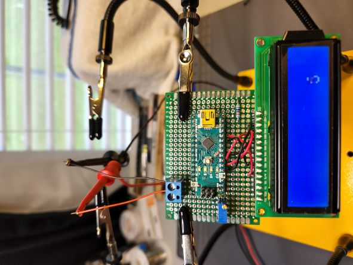
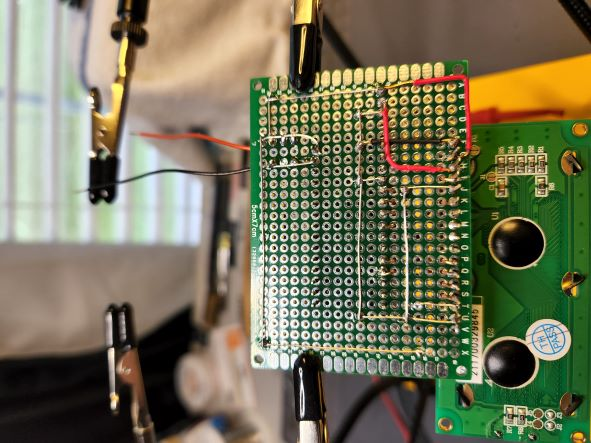

Welcome to my LCD Tester project. This document serves as a comprehensive guide to understanding, assembling, and using the LCD Tester powered by an Arduino Micro. This tool is designed to facilitate the testing of every row and column of swappable LCDs, ensuring their proper functionality. The electronic circuit for this project is built on a perfboard using various electronic components
The LCD Tester project aims to provide a simple, efficient, and reliable method for testing Liquid Crystal Displays (LCDs). By leveraging the compact and powerful Arduino Micro, this tester can systematically activate each row and column of an LCD, allowing users to identify any malfunctioning segments easily. The design's flexibility accommodates different LCD models by enabling swappable connections.
 